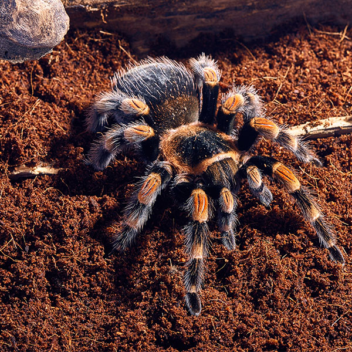
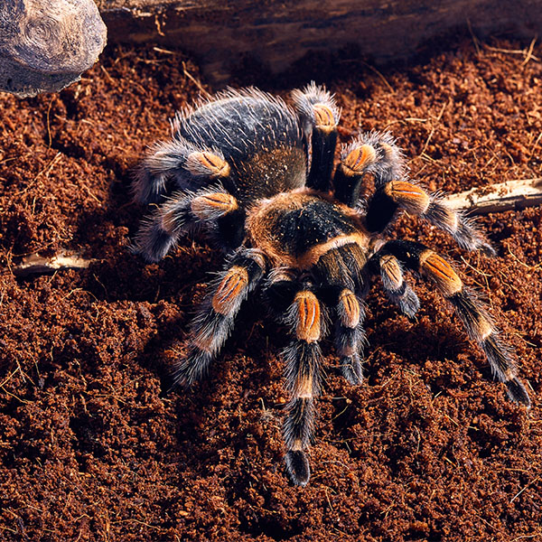
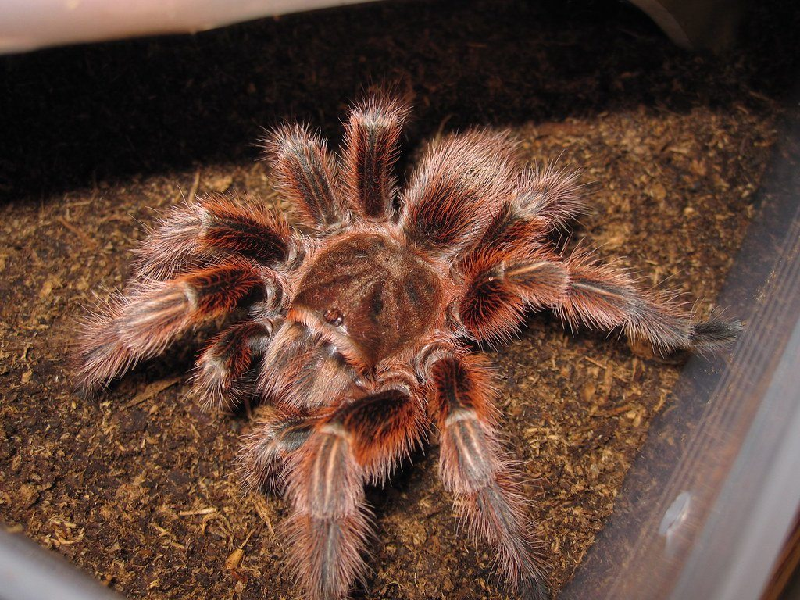
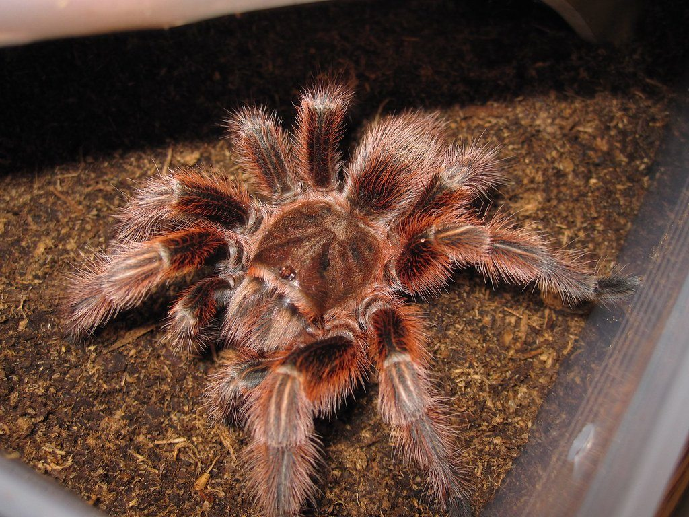
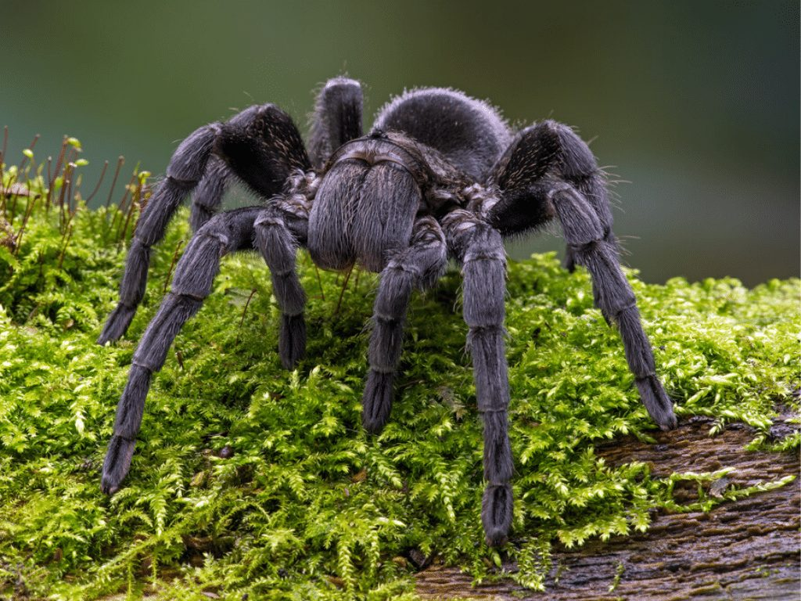
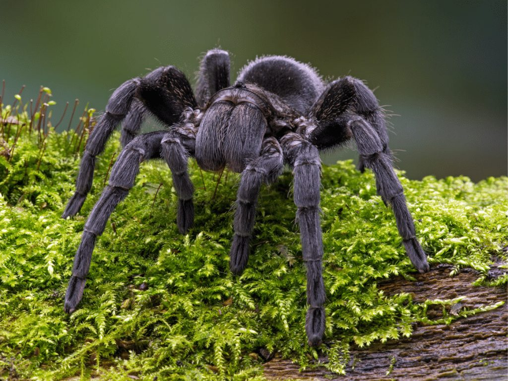

Tarantlid koduloomaks - miks ka mitte!
Tagasi
Oled plaaninud võtta tarantli endale koduloomaks? Sellel lehel on kolm erinevat tarantli liiki, mis on hea alustus algajataele.
Mexican Red-Knee (Mehhiko Punapõlv):

 

- Oodatav eluiga - Emastel ~30a // Isastel ~10a.
- Temperament - Aeglaselt liikuv ja reeglina väga rahulik liik.
- Suurus - 12-15cm
- Elukoha tingimused/Terraarium - Vähemalt 60x35x30 plast- või klaasterraarium, millel on ventilatsiooniga turvaline kate. Ideaalis peaks temperatuur olema 23-26°C. Substraadina kasutada turbamulda. Terraariumisse saab lisada puukoori varjuks, savipotte ja võltstaimi, et jäljendada looduslikku keskkonda.
- Toitumine - Sööta tuleks neid 1-2 korda nädalas. Nad söövad asju nagu: ritsikad, prussakad, putukad, jahuussid.
- Käsitsemine - Ei vaja sotsialiseerumist, kuigi võib õrnalt käsitseda. Käsitsemisseansid tuleks hoida lühikesed, et vältida üleliigset stressi.
Chilean Rose Hair (Tšiili kibuvitsa tarantel):

 

- Oodatav eluiga -
- Temperament -
- Suurus -
- Elukoha tingimused/Terraarium -
- Toitumine -
- Käsitsemine -
Brazilian Black (Brasiilia Must Tarantel):

 

- Oodatav eluiga -
- Temperament -
- Suurus -
- Elukoha tingimused/Terraarium -
- Toitumine -
- Käsitsemine -